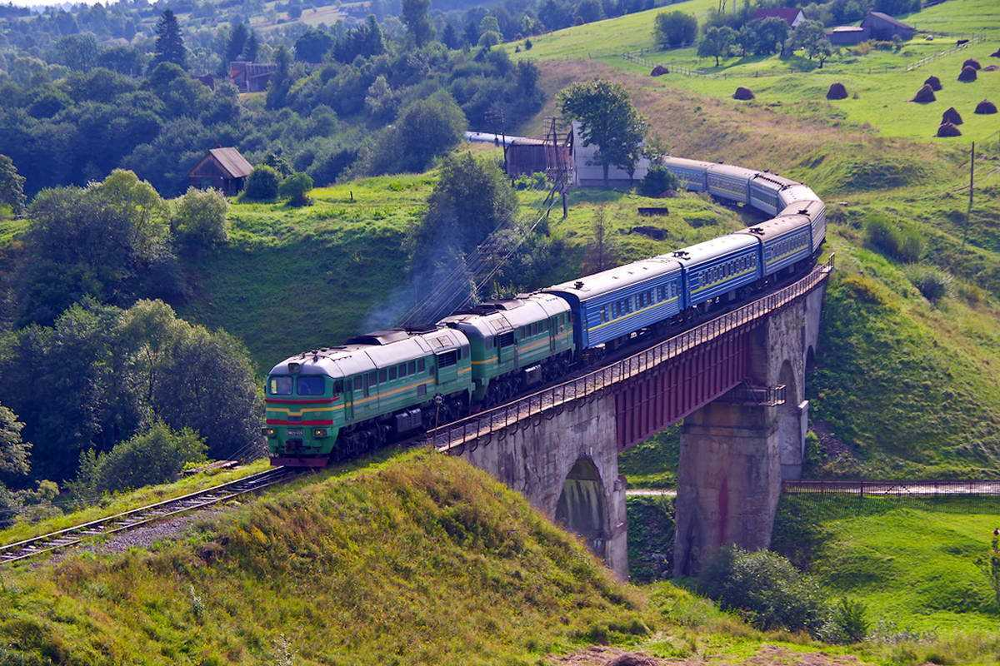
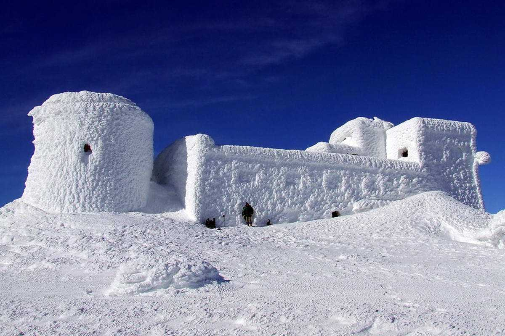
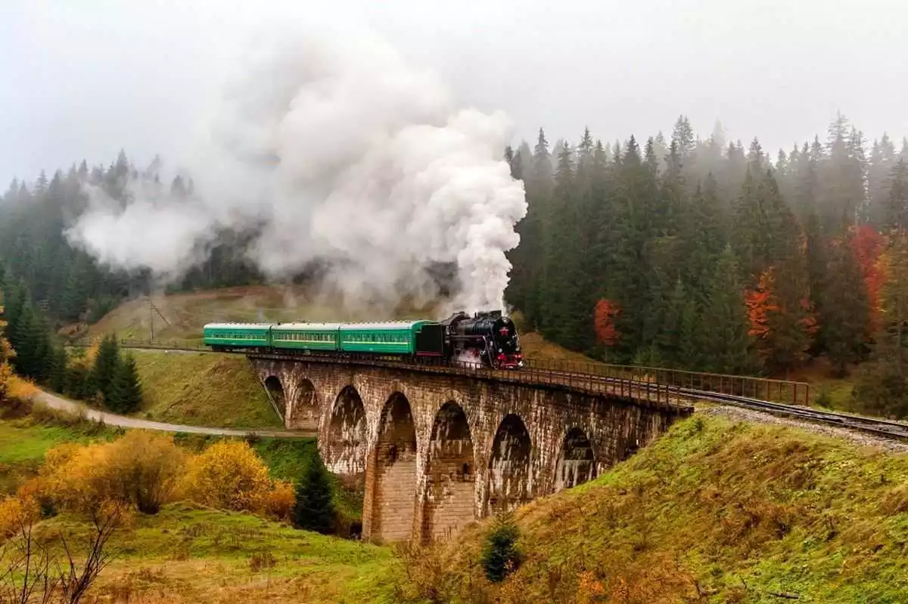
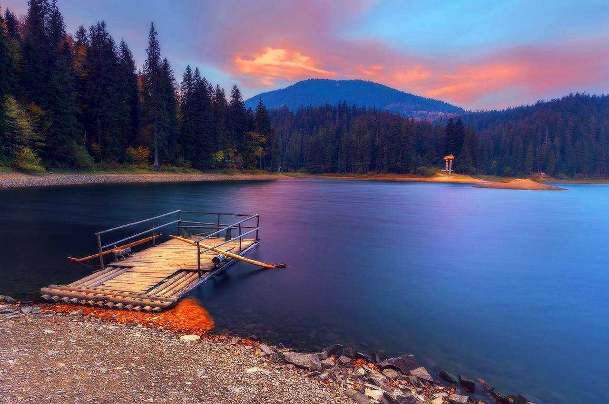
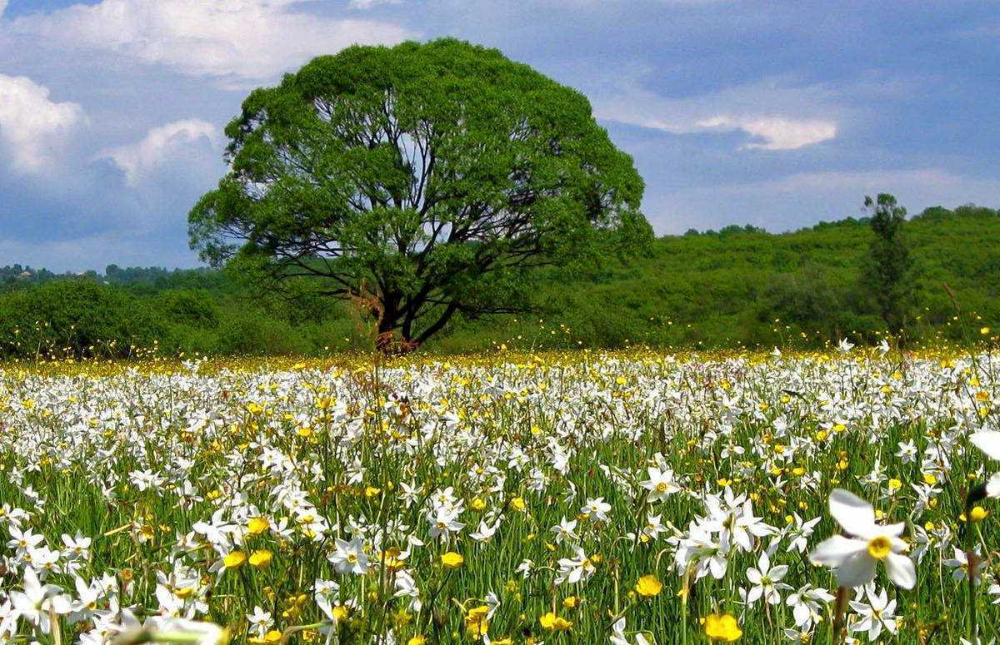
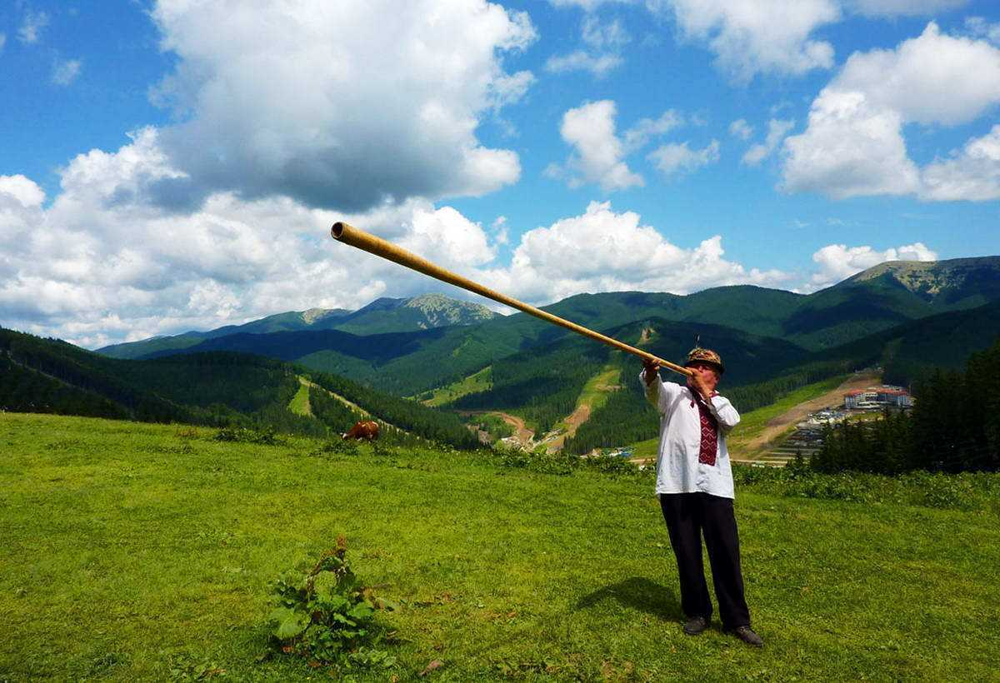

Українська частина Карпат – місця таємничі, самобутні, сповнені духом природи та гір. Тут заховані прадавні
таємниці гордої природи і розгадати їх можна лише тоді, коли здійснюєш сходження на вершини, пробираєшся
глибокими
печерами, долаєш втому та стихію, пливеш на човні за стрімкою течією, мандруєш смерековим лісом та поїдаєш
смачні
чорниці.
Якщо досконалість існує, то Карпати – її віддзеркалення. Карпати – масштабні та багатогранні. Однієї відпустки
точно не вистачить, щоб познайомитися з ними. Але після того, як побував уперше – постійно хочеться повертатися
знову і знову. Тут почуваєшся наче удома. Оберіть для себе
цікавий та посильний маршрут, дізнайтеся про природні об'єкти , які можна відвідати дорогою, складіть перелік
необхідних
речей . Саме момент підготовки допоможе вам здійснити подорож мрії незважаючи на те, скільки днів ви
проведете у горах. Отож, нижче наведемо Вашій увазі топ-10 цікавих фактів про Карпати.
Топ-10 цікавих фактів про Карпати
Місто Рахів
Рахів – найвисокогірніше місто України, яке розташоване у Закарпатській області. Висота над рівнем моря – 820 м. Водночас Рахів – місто з найбільшими перепадами висот між різними частинами поселення. Наприклад, на одній вулиці висота над рівнем моря – 400 м, а на наступній – 1000 м.
Скелі з «ієрогліфами» в с. Середнє Водяне
У селі Середнє Водяне (Рахівський район) можна побачити скелі з «ієрогліфами». Це своєрідні відбитки давнього моря. На пісковиках ще досі збереглися сліди від морських хвиль. Якщо дивитися здалеку, то можна розглянути певні малюнки.
Лікувальна печера
Лікувальна печера знаходиться орієнтовно на глибині від 206 до 282 м. Знаходиться вона у Закарпатській області, в поселенні Солотвино. Це найглибша в Україні медична установа. Тут по-особливому лікують пацієнтів за допомогою солі, з якої зроблено все у приміщення лікарні-печері. Рекомендують таке лікування хворим на бронхіальну астму. До речі, лікарня відкрита з 1968 року й є Ужгородською філією Одесьarкого НДІ курортології.
Обсерваторія на вершині Піп Іван
Обсерваторія на вершині Піп Іван Чорногірський. Часто її ще називають «Білим слоном». Ця колишня метеоролого-астрономічна будівля є найвисокогірнішою в Карпатах. Її було зведено у 1938 році за наказом польського уряду. У різні роки вона виконувала різноманітні функції, однак, наразі знаходиться у занепаді.
Залізничний підземний тунель
Залізничний підземний тунель на відрізку залізничної дороги Скотарське-Бескид має довжину 1747 м. Він зведений у 1887 році і вважається найдовшим залізничним тунелем.
Залізничний міст Віадук у Ворохті
Залізничний міст у Ворохті – один із найбільших кам'яних мостів у світі, його загальна протяжність – 130 м, один проліт має довжину 65 м. Міст зведено за період Австро-Угорського панування у 1895 році.
Озеро Синевир
Синевир – найбільше гірське озеро, розташоване в Закарпатській області. Його ласкаво називають «Морським оком», «Синім оком» або ж «Карпатська ріця». Глибина водойми – 24 м, площа – 7 га, а висота над рівнем моря – 989 м.
Довговічні дерева – тис ягідний та сосна кедрова
Найстаріші дерева – тис ягідний та сосна кедрова. Вік цих дерев – 3-4 тис. років. На жаль, рука людини безжальна, через те, що ця деревина надзвичайно міцна, вона коштує великих грошей, що спонукає людей знищувати дерева.
Долина Нарцисів в місті Хуст
Долина Нарцисів в місті Хуст. Це 80 га естетичного задоволення! У перші хвилини перебування тут, відбирає мову, а відтак приходить усвідомлення того, який чудовий світ та усе в ньому. Долина нарцисів – пам'ятка природи, котра суворо охороняється. Збирати квіти чи вимикати цибульки – недозволено. Однак, завжди можна зробити безліч неповторних кадрів на фоні нарцисів.
Найнижче дерево України – верба туполиста
Найнижче дерево України – верба туполиста, росте в Українських Карпатах. Висота – всього-на-всього 12-15 см.
Карпатська трембіта
Карпатська трембіта – найбільший духовий інструмент у світі. Матеріал – дерево, довжина – 4 м (!). Цікаво, що труба немає жодного отвору. Музичний інструмент чути в діапазоні понад 10 км (!). Трембіта популярна на Гуцульщині, Бойківщині та Буковині.
